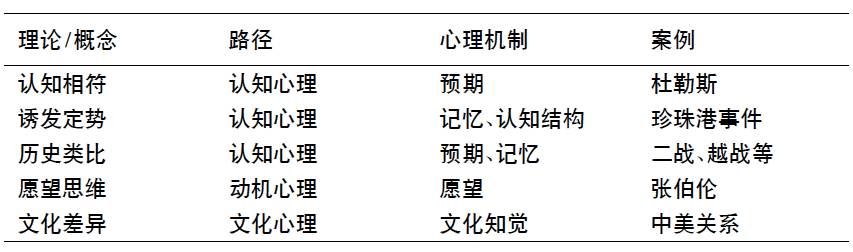
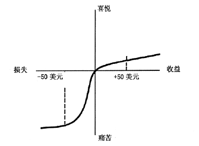

收录于合集
简
尹继武
北京外国语大学国际关系学院副教授
内容提要
根据研究对象和应用领域的划分标准，国际政治心理学的知识谱系可以区分为国际政治心理研究和国际冲突与合作研究。其中作为研究对象的国际政治心理可以分为个体政治心理与群体政治心理，同时也可以细分为政治人格、认知心理、社会心理等多种政治心理因素；而国际政治心理学的应用领域主要集中于国际冲突与合作领域，比如冲突的起源与预防、威慑与战争的心理学等。基于研究主题和应用领域的逻辑区分，作者选择性地评述了错误知觉及其来源、前景理论、小集团思维、公众舆论和群体认同等国际政治心理因素，同时揭示了心理因素在战争起源、安全困境以及威慑和冲突解决等问题领域研究的应用。国际政治心理研究是政治心理学在国际政治层面的应用，是更好地重构与创新国际关系理论的微观基础，同时为理解国际政治世界提供了更为精准的描述性和解释性逻辑。
关键词
政治心理学 国际政治 知识谱系 研究主题 应用领域
战争与和平、冲突与合作是国际政治的永恒主题，因此人类诸多思想家都试图理解战争与冲突的起源以及如何形成和平与合作。对于理解战争的起源与和平的形成问题，政治心理学能够提供真知灼见,尽管主流的国际关系学普遍忽视心理学的贡献。国际关系新现实主义大师肯尼思•华尔兹（KennethN.Waltz)曾言:心理因素对于构造国际关系体系理论而言并无益处。毫无疑问，国家成为国际社会中的主要行为体，但是任何缺失了人的因素的国际社会，只是一个‘‘机器人”组成的国际社会，现实中也是不可能的。在当今国际政治舞台上，大国领袖粉墨登场,连国际恐怖主义也是由活生生的人所组成的。所以，在讨论国际政治的一些常设议题（比如，安全领域的和平与战争、对外决策中心理思维、错误知觉等认知偏差）时“人性”因素，亦即人的心理因素是不可 忽视的，这是我们理解国际政治的微观基础。国际社会当然也是‘‘社会”，所以社会心理因素也是影响国际政治的不可忽视的因素，如国家认同、群体关系、公众舆论等。基于上述关于研究对象和应用领域的两种知识分类标准，本文选择性地评述当代国际政治心理学的知识谱系。
基本理论类型个体政治心理
心理学在国际政治层面的应用，首先是在对外政策领域，其次才是更为宽泛的战略互动和国际关系层次。传统政治科学中的理性选择论认为，_个理性的人是按照自己的成本和收益来确定自己的行动的，而诸如动机、认知和情感等心理因素是非理性的。但是，决策心理学的研究认为，人往往不是绝对理性的，而是会产生系列的认知偏差，亦即错误知觉（misperception),这些错误知觉进一步影响决策者的判断，从而产生错误的决策和行为。比如，两个原本没有战争意愿的国家，经常因为错误知觉而兵戎相见。那么在对外决策中有哪些常见的错误知觉呢？这些错误知觉又是如何产生的？关于决策认知偏差的最新研究进展又是什么呢?
（一）常见的错误知觉
国际政治心理学中关于认知心理的研究，兴起于20世纪五六十年代，起源于对理性选择理论逻辑的不满，到70年代已发展成熟。美国著名政治学家罗伯特•杰维斯(RobertJervis)成为这一领域的代表性人物和集大成者，他在1976年出版了认知学派的代表作《国际政治中的知觉和错误知觉》，从而将认知研究推向了一个高潮。<img src=’’ width=‘20px’ height=‘20px’ />在这本经典的著作中，杰维斯广泛吸收20世纪六七十年代心理学中认知革命的成果，提出原本不希望发生冲突的国家本来存在合作的可能，为何会发生冲突和争斗、拒绝合作最终走向冲突的问题？杰维斯的回答是，在不确定的国际社会中，国家由于受认知能力的局限、信息的不充分等诸种因素的影响，很容易产生错误知觉，这些错误知觉导致错误的判断，从而导致国家采取错误的行为。这些错误知觉大多为夸大对方的敌意，将国家看做是具有冲突意愿的对手。
任何正常的人对于外界信息和环境刺激因素都能接受这些刺激并形成知觉。但是，客观的信息和环境刺激与我们对它们的知觉是否就是等同的呢？答案是否定的。反过来说,如果客观的信息和刺激等同于我们对它们的知觉，那么知觉问题的出现是没有意义的。我们只需要了解客观的刺激,就知道了我们对它们的知觉是什么。然而，让我们来看看希特勒的例子吧。显然，不同的人对于希特勒的威胁知觉是不同的。当希特勒将军队开进莱茵河地区时，有人就认为希特勒开始进攻了，欧洲要发生大战了，而在亚瑟.张伯伦（ArthurN.Chambrlain)看来，希特勒远没有那么恐怖，他认为希特勒要求的不多嘛，我们总能满足他的。所以，张伯伦才亲自前往慕尼黑，逼迫捷克斯洛伐克签订《慕尼黑协定》。同理，在房子起火的极端个案中，无论人的动机、情感和个性是什么，都会赶紧逃命,即行为的趋同。但是，有人从出口成功逃命出来，有人往楼上逃命，有人可能岿然不动，等等。这说明即使在极端的大火情境中，人们的知觉还是存在差异，从而行为各异。既然知觉是如此重要，而且我们又会产生各种错误知觉，那么对外决策过程中经常产生的错误知觉有哪些呢?
第一，阴谋论思维的作祟。我们往往认为对手的行为是经过深思熟虑、精心策划而成的。这一点或许具有进化论上的理由支持，因为包括人在内的生物，首要的安全需要就是生存。这被杰维斯称做是“统一性知觉”即认为对方往往是铁板一块、精心谋划的。英国哲学家威廉•奥卡姆（WilliamOccam)曾提出著名的”奥卡姆刺刀法则”，即“如无必要，勿增实体”，表明人们喜欢寻求最简单、最直接的原因，因为人们往往不喜欢复杂的、既是又非的解释。同理，阿尔伯特.爱因斯坦（AlbertEinstein)的“相对论”其实很“简单”，而且他坚持的看法是一定要用“普通民众”都能听得懂的语言和逻辑阐述你的观点。具体至国际政治舞台，比如美苏之间的阴谋论和“统一性知觉”就非常严重。在1960年美国U-2侦察机闯入苏联领土的例子中，任凭美国肯尼迪总统怎么解释这是一次飞机失误所造成的，苏联领导人极力坚持认为这是美国人的阴谋和托词。在将美国对外政策看做是铁板一块的方面,我们很容易将美国对华政策看做是精心策划的阴谋，而忽视了其“多头政体”的特性，因为美国对外决策体系包括总统、国务卿、国会等多个“山头”。
第二，过高估计自己的影响。这里存在着基本的归因原理。即人们总是在进行原因推断，如果出现了对自身有利的情境，那么认为是自己政策和行为所致，而对于不利的情形，则可能归结为外在的原因。比如说，公鸡一叫天就亮了，公鸡还以为是它把天叫亮的。具体至国际关系，比如，A国缓和行动、妥协和退让，但B国不认为是友好的表现，而认为这是B国所采取的政策和行动的结果，或者是A国对于B国力量的恐惧,或者是A国只是在耍阴谋。
第三，愿望思维的出现。愿望思维的逻辑是，我们所看到的，就是我们想看到的。这里主要强调我们自身的愿望对知觉产生的影响。比如，当我们特别饥渴时,我们很容易把一些似是而非的东西看做是食物和饮料，因为我们心中总是希望能饱餐一顿。在足球比赛中，各队球迷都是看到对方球员的犯规,根据统计数字，球迷对于对方球员犯规次数的知觉比自身球队要多得多。2009年6月4日，美国总统奥巴马在开罗大学发表演说,大声呼吁美国和伊斯兰世界的团结。笔者以为，在美国没有改变自己的霸权主义和强权政治思维和行动的前提下,奥巴马的演说只是”一相情愿”而已。
第四，认知失调现象。人们对于所认识的事物，或者说对于所接受的信息和刺激都有一定的最初认识，当我们接收到的信息与原有的认识不一致时，就会产生认知失调现象。比如，我们认为玛丽其实是一个小气的人，但她给残疾儿童捐助了1000元,这与我们的预期是不一致的，因而就产生了认知失调。一般来说，我们都希望保持原有的认识，那么我们就会认为玛丽其实是迫于外在面子、舆论压力而捐助，而不是真心想帮助别人，由此重新获得认知平衡。当1国政府准备采取某1政策时，发现对于这一政策存在诸多的批评，那么决策者就可能会寻求新的理由，不断自我证实和强化，以求达到认知平衡。
（二）错误知觉产生的原因
领导人之所以会产生错误知觉，主要有两种原因，即外在环境的影响和决策者本身的心理因素。从外在环境来看,在危机决策中，时间紧迫，需要及时做出决断，同时决策者信息掌握并不是很充分;从内在心理因素来看，决策者本身的认知能力、情感状态和动机以及人格等都影响错误知觉的产生。具体来说,错误知觉的来源可以分为以下几个方面（见表1)。

表1 错误知觉的几种来源
第一，认知相符机制。认知相符理论是指，当我们接受到关于具体事物（即信息或刺激）时，我们会将接受到的信息与我们头脑中已有的记忆进行比较。因为在此之前，我们可能对所要接受的信息或刺激有了一定的认识，所以,或许决策者有意或无意识会产生一些预期或期望。但是，当新的信息与旧的记忆不相符时，我们会有一种维持原有的认识的倾向，因此有可能会排斥新的信息，从而原有的认识不断地自我证实。这种心理机制在认知心理学中称为认知相符理论，与我们上述的认知失调理论紧密相关。比如，赌徒在输得越多的情况下，越不愿意放手，因为“全盘皆输”的局面实在是自己所不能接受的。比如，美国国务卿约翰•杜勒斯（JohnF.Dulles)对苏联形成了非常固执的“邪恶”意象，当苏联展示某些友好的举动时，杜勒斯认为这是苏联的阴谋，而不是苏联真心示好。这就是经典的关于杜勒斯的“内在邪恶的信念”模式。
第二，思维定势的影响。经过不断的知觉自我证实，我们可能对于某一特定的信息和刺激形成了特定的认知结构，只要这一信息再次出现，我们就会将其纳入我们的思维结构之中，这就是思维定势或思维结构的影响。但是，这往往是错误的知觉。比如，一些长期在原始森林中生活的“野蛮人”，由于偶然的机会被科学工作者带出森林，随着汽车驶入周边的平原地区，受自身知觉的定势影响，当这些原著民看到汽车玻璃外很远处的野牛时，认为那是一些蚂蚁。当汽车离野牛越来越近时,他们即觉得惊奇和恐惧，因为蚂蚁越来越大了。这是因为基于他们的生活常识，在森林中视野受限,无法形成正常的空间知觉。在日本偷袭珍珠港之前，美国政府和珍珠港之间的信息沟通体现了诱发定势的差异,美国政府提醒珍珠港的肖特将军提防“敌意行动”，即来自外部的可能攻击,而肖特根据自己的经历和信息却理解为”破坏行动”。虽然美国政府掌握了一些重要的日本情报，但肖特将军的诱发定势没有被来自华盛顿的极端重要的信息所改变。
第三，历史类比。常言道，失败是成功之母。这条谚语的潜在逻辑是，我们可以从过去的历史经验中正确地吸取教训，从而可以防止再犯错误。这种建立在历史可以重复的基本信条基础之上的命题，在实践中并非是”屡试不爽”，而可能是错误百出。因为历史不会简单地重复。但是，决策者往往基于历史经验来类比当下的情境,从而做出决策，但遗憾的是，历史类比并不是经常正确的。错误的历史类比产生错误知觉，从而做出错误的决策和行为。比如在生活中，一只小猫在偶然往后倒退时，碰了一下门，然后门就开了。在这种简单的行为主义学习理论基础上，小猫学会了向后倒退，然后将门打开。其实，开门哪需身体后退才能开？所以，现实中，成功往往是失败之母，而失败既可能是成功之母,也可能是失败之母。
比如，第一次世界大战的爆发让我们看到了帝国主义国家之间恶性军备竞赛的结果，即将世界拉入大战之中，生灵涂炭。所以，基于这种历史教训，一战后欧洲大陆和平主义思潮盛行。这直接为20世纪30年代英、法对希特勒的绥靖政策奠定了社会土壤，即以强硬对抗强硬的话，最终冲突和战争不可避免。这种历史经验的类比成为张伯伦等人的内在心理诉求机制。当然,或许对于希特勒那样的扩张主义者，强硬和绥靖都未必能够奏效。二战后，在吸取绥靖主义政策失败之后，美国在朝鲜战争中就采用了历史类比的机制。杜鲁门总统将朝鲜局面比做是当年法西斯的局势，如果不及时加以制止，势必会引起“多米诺骨牌效应”一发不可收拾。
一般来说，新近发生的事情可能会对决策者产生较大影响。所以，我们看到，二战爆发之前，欧洲领导人所援引的“历史”主要是一战的经验和教训；而二战后，美国领导人则以二战爆发中对法西斯主义的态度作为对待共产主义国家的历史类比，在1956年的苏伊士运河危机中，英国也将埃及总统纳赛尔比做希特勒。同时，符合我们情感和心境，尤其是对个人或国家产生重大影响的事件,往往成为历史类比所援引的例子。2001年的九一一事件无疑成为未来美国领导人进行历史类比的重要事件，上文所述的一战和二战等，都是产生重大影响的事件。而某些特定的事件，与领导人有着特殊的“意义”，往往成为领导人青睐的对象。
第四，情感和动机的影响 。上文所述的三点原因，均为认知层面的影响因素。除了认知因素之外，情感和动机也会对错误知觉产生重要的影响。一些消极情感，比如恐惧、愤怒、仇恨和厌恶等都会影响领导人的判断,从而有助于错误知觉的产生。正是基于这种视角，在西方哲学史上，情感和情绪一直是理智的对立面。情感或情绪会损害我们做出有效的决策,这一点是众所周知的。一方面,在一些高度紧张和压力的国际危机决策中，受环境所带来的消极情绪影响，往往会影响正确判断和决策的形成;另一方面，决策者的动机因素，也是错误知觉的来源之一。比如，愿望思维，即我们所看的往往是我们所希望看到的，但我们所希望看到的肯定与真实的事实存在出入。
在此,必须区分认知与动机（情感）影响错误知觉的机制。认知因素往往强调我们对于事情已有的认识，形成了一定的记忆，因此会产生一定的预期。但是，动机和情感因素更多的是产生愿望，即我们内心所愿。关于预期与愿望的区别，我们来看看二战中德国俾斯麦号战舰的例子。二战中，德国的”无敌战舰”俾斯麦号在大西洋地区横冲直撞“所向披靡”。美国开往欧洲的商船经常成为俾斯麦战舰的猎物。为此，为了获得大西洋航行的主动权，盟军必须“干掉”俾斯麦号战舰。在经历无数次的搜寻和追逐之后，盟军终于获得一次良机，在交战中，俾斯麦号战舰虽然获得了军事上的胜利，但是也受到损坏，因而驶往最近的法国补给站。但是偏偏损坏的是螺旋桨，所以俾斯麦战舰只能往相反的方向航行。本来受到重创的英国舰队无望捕获俾斯麦号了，但命运却让俾斯麦号反向航行，朝着搜捕它的英国舰队驶去。而英国舰队明显不相信俾麦号自投罗网，但它们的认识却告诉自己，这是不可能的！因此说明我们的愿望与期望不可同日而语。
第五，文化的差异。文化对于领导人知觉影响的讨论并未充分展开，因为现有大多数政治心理学研究都是基于西方文化情境，而未进入跨文化比较的层面。文化差异的基本前提在于决策者面对的是不同社会文化和政治文化的对象，而往往是基于自身的文化解读对方的信息,从而产生了错误知觉。这一点也可以说是跨文化沟通的缺乏，或者是文化自我中心主义的表现。<img src=’’ width=‘20px’ height=‘20px’ />比如，美国对中国战略意图和行为的判断，就是建立于传统的霸权兴衰的逻辑之上，因此他们难以理解中国的和平主义文化以及中国提出和平崛起与和谐世界的命题。相对于中国和平战略文化的看法，西方学界也有不少关于中国进攻性战略文化或者关于中国古代战争行为的文化分析的著述。比如，江忆恩（AlastairIainJohnston)关于中国明朝战争行为的分析就认为，中国存在倾向于进攻性的战略文化;而许田波和王元刚的分析也表明，中国古代也有丰富的战争经验和传统，这些战争文化跟国家的实力和策略相关，而未必是中国的文化和意识形态环境所决定。在当代中国的外交精英和民众的社会心理中，也存在着”美国中心主义”和“中国中心主义”的差别，比如“美国中心主义”就是以美国为所有对外工作的中心，将美国看成是中国国际环境的全部;而“中国中心主义”则是“自我中心主义”和“自大主义”相结合的产物。现实中，诸如“中美共管”的论说，忽视周边的重要性，成为上述外交心态的现实反应。网，但它们的认识却告诉自己，这是不可能的！因此说明我们的愿望与期望不可同日而语。
（三）前景理论
前景理论（prospecttheory)是近年来决策心理学和行为经济学中最为引人注目的理论。自从1979年由丹尼尔.卡尼曼（DanielKahneman)和阿莫斯.特沃斯基（A-mosTversky)提出之后，前景理论在经济学、心理学和政治学等众多社会科学中掀起了决策模式的革命。相对于传统的效用最大化理论，即认为人们做出选择,往往是基于成本与效应的分析，追求最大化的效用一“最佳”模式，前景理论认为，人们决策的心理动机或基础在于防止损失，而不是追求收益。这与我们如何确立框架问题紧密相关。因为前景理论看重的是相对价值，而不是绝对数量。如果我们框定为收益，那么我们就会规避风险;如果框定为损失，那么就会冒险。这就是人所具有的损失厌恶的心理。比如，假设今天我赚了1000块钱,在传统的理性选择理论看来，我所拥有的值为1000的数值。但如果我设定一个参照点为5000,那么我会感到难受，因为离目标还远呢。又如，人们损失1000块钱与赚了1000块钱的感觉是不对等的。损失的感觉更让人“痛不欲生”（见图2)。

图2：前景理论的收益与损失价值
前景理论所提出的损失厌恶改变了我们传统上对于收益的看法。它更强调人们决策时心理感受的作用（基本的实验见表3)。不同的行为体对于损失的敏感性和感觉存在差别，比如，发达国家的国内社会对于自己国民的生命更为尊重，所以我们看到，在美国对外战争过程中，美国国内社会对于战争死亡人数特别敏感。在越南战争、伊拉克战争中都是如此。而其他的相关国家并非如此。
相较于在政治科学中应用较少的情况，前景理论在国际关系研究中得到大量的应用，并产生了丰富的成果。在外交决策、战略互动和国际关系层面，前景理论都能带来新的启示。比如，美国总统罗斯福对于二战态度的转变为前景理论提供了解释的空间。在《慕尼黑协定》签订前后，欧洲的整体政治格局和力量对比其实并没有太多的改变。所以，从外部的权力结构来看，似乎对于美国并没有太大的影响。但是,影响到罗斯福总统对欧洲态度转变的是，当他翻阅到越来越多的来自欧洲的报告时,他越来越感受到，欧洲的局势对于美国来说越来越接近于一种“损失”所以美国不能置身事外。所以，我们看到的是，正因为罗斯福对于欧洲大陆局势认识性质的变化，才导致了他的偏好的改变，从而为美国干预欧洲大战奠定了基础。

表3：前景理论的基本实验
同理，就威慑理论（deterrencetheory)的逻辑来说，传统上，国家实施影响力的手段为威慑对方（防御、强迫等都是带有威胁的意味）。但是，前景理论重新塑造一种二元的影响力手段方式。如果我们将对手的动机进行区分的话，则可以分解出两种基本的战略动机:对手改变现状，可能是因为要追求收益，也可能是因为想防止损失。所以，如果对手挑战现状的动机在于追求收益，我们则使用传统的军事（加政治）威慑的手段，这样就能达到制止对手行为的目的；如果对手挑战现状的动机在于防止损失，那么我们就必须选择保证的措施，这样可以让对手放心，从而不会冒险。这种二元的影响力手段在台海关系中能够得以应用。比如，祖国大陆对台海实行何种影响力手段？这是对台工作必须思考的一个问题。在这里，首先必须区分的是，台湾的抽象概念具体所指是什么？基于各种数据调查显示，台湾地区内部追求”台独”的人所占比例较小，而大部分民众是倾向于维持现状。所以，我们可以将追求“台独”的“台湾”对象看做是为了追求收益而挑战现状，而普通民众则更多是一种防止损失的心理，即台湾政治认同、法理地位、生活方式和价值观以及生活水平的损失。因此,对于台湾的手段选择必须多元化和多层次。对于追求“台独”的人士，一定要加以威慑;而对于大部分维持现状的人士来说，必须做到安抚民心，防止对方陷入一种损失的心理之中，从而走向冒险，反而不利于两岸的和平统一。基于此，我们一定要将“台独”和台湾民众等区分开来，有针对性地开展工作。
上述研究大多为将前景理论运用于国际危机、外交谈判以及威慑等领域,而鲜有对国际关系中前景理论基本理论逻辑的思考和创新。近期，理查德•勒博（RichardNedLebow)重新为国际关系的前景理论设定了一种解释框架，这具有很大的理论创新意义。他将国家的动机区分为三种类型，即欲望（appetite)、恐惧和精神（spirit)，由此在三种不同的动机驱使下，国家对于收益和损失的框定与接受程度是有差别的。比如，传统上的损失规避心理更多的是基于物质主义的欲望动机，即在收益领域倾向于规避风险,而在损失领域倾向于冒险;而在恐惧主导下的国际行为中，如果国家的框定为收益，则也是表现为风险规避的心理，但在损失的领域，则更倾向于风险接受；最后，如果荣誉、威望等精神与认同因素成为国家的根本动机，那么无论是收益还是损失，它们均表现为风险接受的倾向，在损失领域表现为最具冒险倾向。勒博对前景理论的重新解释区分了三种国家动机维度，由此重新设计了六种可能的对于收益和损失的心理态度。这是国际关系学者对政治心理学理论创新的尝试,更为接近心理学范式的描述精确性特征。
基本理论类型群体政治心理
政治心理学的应用层次划分既有个体层次（如领袖政治人格、认知、情感与认同），也有集体层次（如投票与选举心理、民族主义与恐怖主义等），与此相一致的是，在国际政治心理这一应用领域，既有个人层次的，也有集体层面的国际政治心理内容。就集体层面来说，其实就是社会心理。在决策领域，除了前述的个体（领导人）对外决策之外,还有“领导集体”的决策;而大众政治心理也包括了公众舆论、民意、民族主义以及社会认同对外交政策的影响。群体关系与群体社会心理学也能够为国际政治中的冲突解决提供一定的知识和路径启示。
（一）小集团思维
两人以上所组成的集体可以称之为群体,群体是由个人所组成，但是正如一般的整体和部分关系一样，群体决策具有自身的特点和规律，而不是简单的个体决策总和。群体决策就是指群体所做出的决策。群体决策具有系列的特点：第一,群体决策并不表示决策的质量会更好，甚至优于个体决策。一般来说，我们都认为集思广益、见贤思齐,在经过多方面的参照后决策的质量会更佳。但是，正如三个和尚可能没水喝一样,群体决策并非必然是最佳决策。第二，群体决策中，必须有至少两名决策者共同负责决策，这是区别于个体决策最为本质的因素。第三，较之于个体决策，群体决策的过程一般来说更为复杂。第四，群体决策结果是个体决策者的意见达成一致或妥协之后得出的。第五,群体决策的质量受决策规则、个体与群体之间的关系的影响。
群体决策研究一般遵循两种路径：其一是社会心理学路径，其二是经济学路径。社会心理学路径较为关注的是，群体决策产生的偏差及其预防。群体具有的各种偏差有群体极化，即随着群体讨论的深入，群体成员可能达成一致意见的倾向；群体趋同效应,即群体成员所表现出来的从众效应。最为著名的群体决策偏差当属美国社会心理学家欧文.贾尼斯（IrvingL.Janis)所提出的”小集团思维（groupthink)”群体决策模式，他通过对1961年美国操纵古巴流亡者入侵猪湾的决策过程，指出小范围的最高领导层所产生的群体氛围和文化常常限制群体对现实进行客观的分析，进而做出错误的决策。
1961年4月7日，1400名古巴流亡分子在美国的支持下，从古巴猪湾秘密登陆试图推翻古巴政权,结果遭到惨败，肯尼迪政府不得不出重金赎回被俘人质。为何一群外交决策的精英群体会做出如此不明智的决策？实际上，这不是一个简单的决策，而是经过数月的“精心谋划”而成。在贾尼斯看来，首先，肯尼迪政府决策中犯下了诸项错误估计，比如，他们认为一般人肯定不知道这是美国主谋的入侵行动,但计划细节早因此只需装备一点点陈旧飞机就可以掌握制空权，同时他们认为古巴军队是不堪—击的，甚至能够引起连锁反应，即古巴各大城市肯定闻风而动,各地反抗现任政权的起义会遍地开花，而且他们认为古巴流亡者组成的军队肯定是士气高涨，因为他们要打回老家了！事实上，上述估计无一正确。贾尼斯指出，正是肯尼迪政府幕僚集团的“小集团思维”，才导致了这次决策和行动的失败。他认为，小集团思维是”当人们深深地卷入一种有凝聚力的群体当中，当成员追求全体一致的努力凌驾于他们实际评价行动的替代路径的动机之上，人们所运用的一种思考模式”。所以，政策制定小群体关注的是集体的团结和凝聚力，而不是合理的政策目标。由于群体的成员都担心带上分裂小组的罪名，害怕群体分裂而不愿意、不敢提出自己的意见,这样就造成了不能客观地对现实进行分析。在这种群体文化形成之后，决策小组就不可能客观地选择并制定政策方案,最后会导致不科学的决策和后果。
小集团思维的存在也是需要系列的先决条件的，比如群体不允许局外人发表他们的意见，比较自负的领导一开始就已经”定调”，因此难以有真正意义的讨论,而且群体并不存在鼓励考虑所有政策选择的传统以及成员背景具有高度一致性和时间压力特别大等因素。如何判断群体决策过程中是否出现了小集团思维的特征呢？贾尼斯提出了八个方面的症状，但笔者结合猪湾事件总结出如下六个方面症状: 第一种，战无不胜的错觉。肯尼迪政府的幕僚们认为他们是战无不胜的。肯尼迪及其顾问都认为自己神机妙算,不习惯失去任何东西。第二，全体一致的错觉。群体成员对于一些警告信息要么是忽视，要么对其进行合理化。在猪湾事件的讨论会上，没人对计划提出过质疑。第三，个人质疑遭到压制。比如，阿瑟•施莱辛格（Ar¬thurSchlesingerJr.)说,他当时曾对入侵猪湾计划存有疑问，但是没有说出来。第四，有一些自封的心灵卫士。他们在群体决策过程中，充当心灵卫士的角色，保证决策按照设想的轨道进行。比如，罗伯特•肯尼迪（RobertKennedy)等告诫施莱辛格不要在会议上表达他的疑问，因为总统早已下定决心实施这一计划了。第五,领导人鼓励顺从。肯尼迪总统让中央情报局主导讨论，而不是让幕僚们充分发表意见。第六，群体意见相左面临的压力。在讨论会上，幕僚们都不愿意与强烈主张这一计划的中央情报局主管发生意见冲突。
当然，小集团思维并不一定必然导致政策的失败,其他因素如官僚政治、专断的领导人等都可能会造成政策决策失误。自从小集团思维模式提出之后，在国际关系、政治学、管理学和经济学等领域，这一模式被广泛应用于分析各种群体决策问题。应该说，国际关系中对外决策实践中，小集团思维还是普遍存在的。比如，约翰逊总统的越南战争升级决策、二战之前英国首相张伯伦的“核心圈子”推动的绥靖政策、1980年卡特政府伊朗人质危机失败、甚至包括2003年小布什政府发动的伊拉克战争都可以看到小集团思维所造成的后果。<img src=’’ width=‘20px’ height=‘20px’ />那么小集团思维是否可以避免呢？当然可以。比如，采取一些预防措施,领导人应该鼓励成员充分发表意见，对各种方案提出自己的质疑；领导人最好不要一开始就引导议题和态度；决策小组可以分成不同的职能区块，有助于相互之间独立思考;可以引进局外专家参加讨论；群体中应有人充当为对手辩护的角色，等等。
自从贾尼斯提出小集团思维之后，许多社会心理学家对小集团思维进行了系列的研究和发展。对于小集团的性质、政策成败标准、小集团与官僚政治因素的平衡都有一些争论。特别是要区别小组决策与小集团思维,不能将任何集体决策都看做是小集团思维。新近又有学者提出“新群体综合征”，指出新近成立的群体更容易产生小集团思维。
（二）公众舆论
顾名思义，公众舆论是指公众对于外部世界的认知、态度和意见。自从美国著名传播学家沃尔特•李普曼（WalterLippmann)在20世纪20年代推出其经典的《公众舆论》著作之后,公众舆论成为政治学、社会心理学、传播学等多种学科的讨论话题。何为公众舆论？公众舆论是指公众自己所秉持的意见和态度，还是指在公众之间传播的意见和态度？进一步，公众舆论何时自身成为一种独立的力量，开始发挥作用呢？政治心理学层面的公众舆论更多的是倾向于公众自身的态度。随着当代政治心理学中越来越多地采用现代统计方法，公众舆论的获得一般都是通过较为严格的问卷调查而成。
只要任何存在由人组成的群体的地方，就会有公众舆论的存在。但是，公众舆论与政治事务相联系，或者公众舆论成为影响政治事务，即政治决策的一个重要影响因素，这需要建立在一定的条件之上。最为根本性的因素就是，由公民组成的公众能够获得影响政治事务的渠道和条件。这首先跟政治体制的性质紧密相关。在越南战争之前，美国政治心理学界的共识是：公众舆论是不稳定的，缺乏连贯和一致性，不能为稳定与有效的对外政策提供基础，对外交政策影响也较小。但现代民主社会中，由于大众政治的兴起，国家政治事务越来越多地受到大众的影响，而大众也具备了影响政治的法理基础。在西方的民主代议制中，由于国家总统或总理都是由选民选举而成,反过来，国家领导人都必须为选民负责，因此很多政治家的第一要务或许在于延续政治生命，因此首要的国内政治考虑非常关键。而大众要影响政治事务，中间的途径就是必须通过一定的利益集团、非政府组织的利益渠道表达，其中媒体起到了重要的作用。因为媒体本身具有采集公众舆论（民意）的功能，而媒体又可以将公众舆论的影响扩大到最大范围。就美国例子而言，在遭受九一一恐怖袭击之后，布什总统的支持率达到了空前高比例的地步。根据相关调查显示，布什总统在恐怖袭击事件之后的积极主动反应，即调动全部国家机器，将美国的国家安全战略重点转向反对恐怖主义，这为他获得了极大的声望和支持率。正是在高达80%左右的美国民众支持率下，布什总统才开始了他的反恐战争的序幕。从这个意义上说，布什总统的反恐战争是美国公众舆论顺水推舟的产物。布什的反恐战争既具有较高的公众舆论的支持，同时也存在领导人操纵、引导公众舆论的一面。出于领导人个人需要、国家政治目标的需要，领导人及政府也可以操纵和引导公众舆论。当然，这需要看一个国家对于舆论的掌控能力，特别是媒体的支持和配合力度。进而，国家可以恰当地利用公众舆论作为对外关系中的一种手段。比如，美国遭受恐怖袭击之后，美国民众对于恐怖主义的人人自危情绪就成为美国开展对外反恐战争、对外战略布局的一个重要的国内基础。
20世纪六七十年代成为美国公众舆论转型的一个分水岭。在经历了越南战争创伤、与苏联的战略缓和以及水门事件之后，美国社会自二战后形成的共识一军事力量可以实现美国对外政策目标遭受到质疑。由此反映到公众的对外政策态度上,20世纪60年代中期，美国民众中持国际主义态度（即积极干预全球事务）的比率达65%左右，而孤立主义者不到10%。但是10年之后，持国际主义态度的大众仅略微超过40%,而孤立主义者比率上升到20%有余。同时，美国公众的国际主义态度的支持率中，公众舆论的关注大都基于欧美国家情境，尚未进入成熟的跨文化与民族的公众舆论比较。因此，随着中国成为国际舞台上的重要一员，中国的公众舆论与对外政策之间的关系是未来值得探讨的问题。
随着现代科学技术的发展，公众舆论表达渠道的一个重要变化就是网络技术的出现。因特网技术的发展和普及使得网络成为现代公众舆论出现并发挥作用的一个重要平台。这一点在中国表现尤为突出。在反对日本军国主义思想、表达对美国在中国周边地区频频军事动作等对外事务方面，中国网络上的”公众”舆论几乎是一边倒地表达强烈的爱国情绪以及较强的民族主义立场。当然，网络上的舆论表达是否能够成为真实的公众舆论，尚待进一步的科学证实。因为网络表达的主体受教育背景、地区限制以及话题引导等多方面的影响，难以完全囊括一般意义上公众概念的外延。但不能忽视的一个倾向是，中国民众在网络平台上形成自己的对外事务态度，这已是一个不争的事实。而且，网络民意成为政府决策的一个重要考量。同时，网络成为中国民众与政府（领导人、外交部等部委）互动的一种重要渠道。比如，胡锦涛、温家宝、李肇星等国家领导人曾多次与网民互动，很多主要的门户网站都有不少民意调查栏目，它们每天都会对一些争议性的话题进行简单的百分比调查。
（三）群体认同
如果以群体为标准来分析国际关系，那么必须对群体进行区分，群体社会心理学的成员对自身所属群体有安全、认同、热爱以及忠诚等积极情绪。内群体身份下的群体成员情绪取决于内群体对成员利益的满足以及群体对成员的重视程度。在内群与外群两种边界区分之后，这两种群体内部的情感与认同是截然相反的，比如，在内群中是友谊与和平的关系，而对于外群，则为敌意和战争。而且，与外群的对立往往会加强内群的团结与认同，所以，在这两种对立的群体类型中，内群所代表的是为群体牺牲和对群体忠诚,而对于外人则为仇恨和蔑视，这二者是相辅相成的。这就是群体心理学中典型的内群偏爱(in- groupfavoritism)与内群偏爱紧密相关的是族群中心主义（ethnocentrism),这是群体所表现出来的—种普遍的歧视态度和行为。就态度来说，它包括将自己的群体（内群）看做是美好的和优越的，自己的价值标准放之四海而皆准，而外群体则是不足挂齿的和低等的。由此，与族群中心主义相连的行为是内群的合作以及外群之间合作的缺失，甚至是冲突与战争的爆发。如果从族群中心主义的视角出发，减少群体间冲突的措施包括尽量扩大知觉上内群的边界以及建设群体之间的“连接性”的社会资本因素。群体的集体记忆问题是与群体冲突紧密相关的另一个问题，这是群体有意识或无意识地制度化的一种群体记忆。国家群体的记忆既有理性的作用，比如，起着维系群体内部团结、巩固群体认同和凝聚力的作用以及成为群体对外部群体进行讨价还价的一种合法工具等,简言之，群体的集体记忆成为群体认同的基础；同时,群体集体记忆的强化，往往成为群体间敌意和冲突升级、紧张关系难以缓解的客观因素。群体的集体记忆的形成机制其实就是一种集体情感的社会化过程,这一过程的教授者主要是国家领导与公共知识分子，而后通过媒体和教育等多种社会化途径，向整个群体进行教授，之后群体接受并内化。国际关系研究中，关于集体记忆的研究较多是针对不同国家/族群之间历史记忆与现实冲突的互动，比如对德法、德以关系的研究等。
社会心理学中，早期的冲突理论立足于个体心理属性，解释由个人结合而成的集体行为。挫折- 攻击论认为，攻击的发生是以挫折存在为前提，是因为基本需要没有得到满足。这一理论常用来解释两次世界大战之间欧洲的反犹主义。随后的相对剥夺理论强调只有当人们感到当前的生活水准与他们应该享受的水准不一致时,才会发生反抗和不满。比如，美国黑人运动中的领袖往往不是剥夺最为”严重”的底层人民，而殖民地解放运动中的领袖人物往往也是出身良好,或许受过西方的教育，这些都启蒙了他们的心智，让他们感知到自己的被剥夺状态。美国社会心理学家穆扎法•谢里夫（MuzaferSherif)提出现实利益冲突论,认为冲突都是反映了不同群体真实的客观利益。比如，巴以冲突很大程度上是一种客观利益之争，即土地问题。群体心理学最新的冲突理论是社会认同理论，其创立者为亨利•泰菲尔（HenriTajfel)和约翰•特纳（JohnTurner)。他们认为社会认同是“个体自我概念的一部分，源自他的特定知识，这种知识涉及一个社会群体（或多个社会群体）的成员资格以及与之相连的价值和情感意义”。社会认同有助于提高成员的自尊，比如，在中国人心中，北京奥运会成为中国与外部世界比较的一个维度。北京奥运会胜利召开，每个中国人都从中获得作为一名中国人（社会认同）的高度自尊与自豪。但是，人们在追求自己群体的社会认同时，很容易就走向了群体偏见，比如，认为自己的群体（我们）是好的，而外群（他们）就是差的。针对这种偏见，各群体如何避免冲突,走向和谐呢？ 一般来说，从社会认同的追求与比较，到最后冲突的形成，要经历四个阶段，即内群认同、内群偏爱、群际竞争和群际冲突。当我们自身的社会认同遭受到其他社会认同的威胁时，而我们又无法加入到其他的群体当中，这时候弱势群体成员就倾向于通过集体行动来推翻他们认为不合理的政治、经济制度。在国内政治中表现为游行示威、政治暴动和战争，在国际政治中表现为国际冲突与战争。不同群体之间的冲突可以通过两种渠道得以避免是在群际互动中，通过接触减少冲突；二是通过改变比较的维度，从而避免冲突。
美国著名心理学家戈登.奥尔波特（GordonW.Allport)在《偏见的本质》一书中提出了消除偏见的接触假设。他认为不同群体成员通过不同方式接触，是减少他们之间可能存在的紧张或敌意的最好办法。通过接触消除偏见，这是需要系列条件的，同时社会心理学中也有观点认为，群体之间的接触可能会进一步恶化群体之间的关件下又会增加冲突。奥尔波特认为这些接触最好是长期性的，并且涉及合作性活动，而且需要正式的制度加以支持，当然同等社会地位的人接触效果最好。接触论为美国种族隔离制度的废除提供了理由。又如，改革开放之后，中国与国际社会互动增多，人员来往、文化交流与贸易额增长迅速，为消除国际社会对中国的偏见提供了基础。北京奥运会就是一个较好的例子。当然，或许不同群体之间根本性的价值分歧难以靠接触消除。接触还具有系列的有助于减少冲突的好处，比如接触可以增加群体间个体的流动性（如移民流动）；接触也可以产生更多的交叉群体成员，加之以个体化的接触方式，更有利于消除冲突。比如，中曰之间长期的民间交往对于促进双方的情感交流与正确认识有积极的作用。更进一步，如果成员可以自由流动，实现社会认同的转化或同化，即如果美国人都成为中国人，那么中美冲突自然就消失了。日本自明治维新后，实行“脱亚入欧”的国家发展战略，力图使自己成为西方国家的一员。这种“全盘西化”的策略实际上就是一种社会流动的认同策略。二战后，美、英、法等西方大国确立将联邦德国融入西方世界的政策，由此接受联邦德国作为西方世界的一员，这样就消除了它们之间的身份竞争和冲突，为二战后西欧和平稳定的局势奠定了基础，而联邦德国实行的也是融入欧洲的政策。就社会创造来说，国家可以改变与外部群体比较的维度。通俗来说，就是虽然你们在这方面比我们好，但我们在那方面比你们更优秀。比如，针对西方对中国的人权批评，中国政府在历次抨击美国人权的虚伪、双重标准及问题时都强调在基本生存权上中国的努力和成就。中国“人民生活从温饱不足发展到总体小康，农村贫困人口从两亿五千多万减少到两千多万”。此外，还可以赋予消极比较维度以积极的价值,比如，在消除美国黑人歧视过程中兴起的“黑色即是美丽的”理念变化。这一点，在中国近年来重新评价儒家文化中也得以体现。与建国后全面否定与批判儒家文化不同，近年中国社会的儒家文化热及海外孔子学院的兴办，都是赋予中国传统文化以积极的评价与价值，从而达到增强中国人的社会认同的作用。中国学者甘阳提出，当今中国有三种传统,亦即改革开放形成的“市场”传统、毛泽东时代的“平等”传统以及几千年来的传统文化或儒家文化最后，我们还可以改变比较的对象，向“弱势”群体进行比较。比如，我们经常将中国与印度和俄罗斯进行比较。与美欧西方发达国家相比，中国的政治经济实力差距尚大，但与“起点相似’、‘社会层级”相似的印度和俄罗斯等国相比，我们可以发现自己的优越之处，中国人也能给自身更多的积极评价，从而增强自身的社会认同。冷战结束后，面对美国的一超独霸地位，中国和俄罗斯均没有使用社会竞争等群体竞争或冲突的策略，比如，中国采取积极融入现行国际体系，实行和平发展的对外战略。从社会认同理论的角度看来，中国和俄罗斯都是为了追求国际社会地位,采取了各种社会创造的策略。基于此,黛博拉.拉森（DeborahWelchLarson)等学者认为，如果美国采取尊重中国社会地位的政策，那么中国将在国际治理中发挥更大的作用。所以,从群体社会认同来说，作为群体成员的国家采取什么样的认同策略，对于冲突的消解起着至关重要的作用。如果采取社会竞争的策略，那么无疑就走向暴力与冲突，如果采取社会流动或社会创造，那么我们就可以走出冲突的困境，有助于向和谐的国际社会前进。 （未完待续）
文章来源： 《世界政治与经济》2011年第4期
筛选：凌羽 编辑：里仝